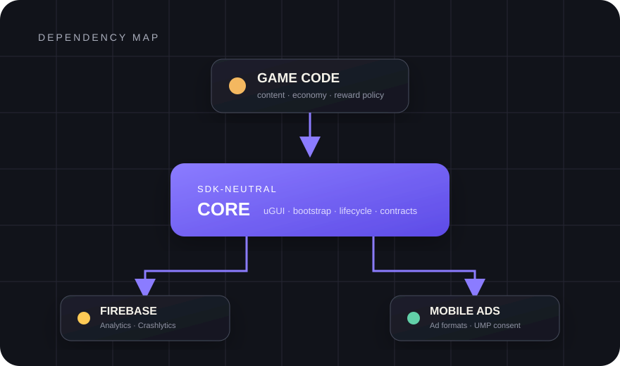

PERSONAL ENGINEERING ARCHIVE
게임 하나를 만드는 대신,
다음 게임의 시작을 설계했습니다.
장르가 바뀌어도 남는 uGUI 흐름과 Firebase, Google Mobile Ads 연동을 검증 가능한 모바일 게임 기반으로 분리한 과정입니다.
BOUNDARY BEFORE FEATURE
SDK가 바뀌어도
게임의 중심은 흔들리지 않게.
게임 코드는 Firebase나 광고 SDK가 아니라 Core의 계약을 바라봅니다. 외부 SDK는 교체 가능한 adapter로 밀어내고, 씬·프리팹·설정은 시작 프로젝트가 소유합니다.
아키텍처 자세히 보기 →
ENGINEERING DECISIONS
편한 지름길보다,
다음 프로젝트에서도 설명되는 선택.
명시적 연결
런타임 Find와 Resources.Load 대신 scene, prefab, serialized reference로 의존성을 드러냅니다.
실패 가능한 SDK
Firebase 설정이 없거나 광고 동의가 늦어져도 앱의 기본 UI 흐름은 계속 동작합니다.
릴리스 전 차단
샘플 광고 ID, 템플릿 package ID, 누락된 Firebase 설정을 빌드 전 검증 단계에서 구분합니다.
DOCUMENT LIBRARY
결론보다 근거를 남깁니다.
설계 판단부터 설치와 검증 원장까지, 필요한 깊이로 들어가세요.
NO RESULT
일치하는 문서가 없습니다.
검색어를 줄이거나 프로젝트 필터를 바꿔보세요.